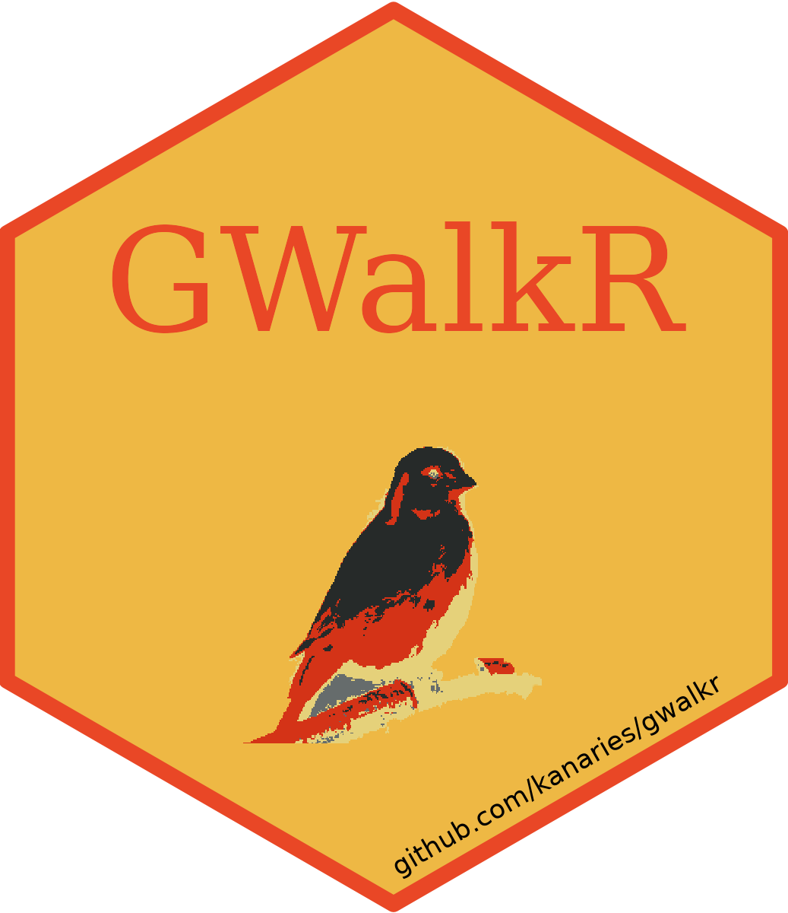

Featured Research (see my CV for more)
Uncovering societal dynamics through data
I leverage advanced AI and computational methods to understand social mobility, inequality, and human success across history and the present.

Extending the horizon of human creativity
I build collaborative human-AI systems and generative algorithms that empower users to create expressive images and cinematic videos.
Projects for Fun

GWalkR: R Package for Interactive Exploratory Data Analysis
🕵️ GWalkR is an interactive Exploratory Data Analysis (EDA) Tool in R. With just
single line of code, it can simplify your R data analysis and data visualization
workflow by turning your data frame into a Tableau-style UI for visual
exploration. Also, by using it in RMarkdown, you can create web page to showcase
your insights with editable and explorable.
🪄 Below are some examples showing the power of GWalkR with RMarkdown. Data are from
TidyTuesday: